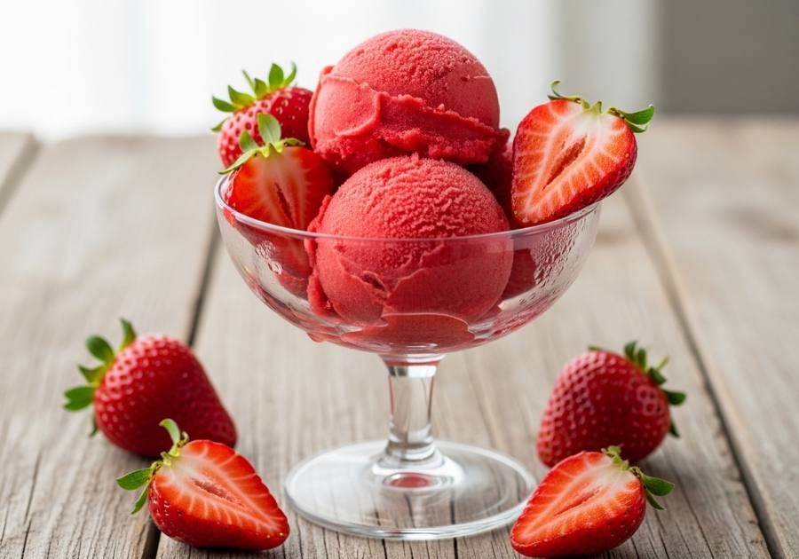

← Alle recepten

🍽 1 pint (4 porties)
⏱ Voorbereiding: 10 min
🔥 Bereiding: 24 uur
Σ Totaal: 24 uur 10 min
Ingrediënten
- 450 g verse aardbeien, kroontjes verwijderd
- 1-2 el suiker (optioneel, bij zure aardbeien)
- 1 el citroensap (optioneel)
Bereiding
- Snijd de aardbeien in stukken en druk ze stevig in de Creami-pint tot maximaal de vullijn.
- Strooi eventueel de suiker erover en voeg het citroensap toe.
- Vries minimaal 24 uur plat in.
- Draai op de stand Sorbet. De eerste draai is kruimelig — een Re-spin maakt de sorbet romig en schepbaar.
Bron: Basics With Bails